Part IV: Mapping and Navigation
Why Navigation?
So far, every controller we've built assumes a clear, straight-line path to the goal: sense the error, and drive it to zero. But what happens when there's an obstacle sitting directly between the robot and its goal?
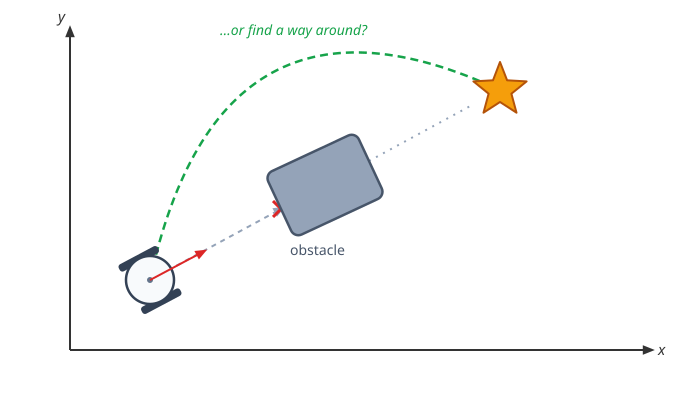
A controller alone can't solve this — it only knows how to reduce distance and heading error, not what's in the way. To get around the obstacle, the robot first needs a map of its environment, and then a path through that map for the controller to follow. This chapter covers both.
Configuration Space and Waypoints
The way to actually build that path is to first inflate the obstacle by the robot's own size, until the robot can be treated as a single point. Any point outside this inflated boundary is guaranteed collision-free, no matter which way the robot is facing.
A path planner searches this free space for a sequence of waypoints — intermediate goal poses that string together into a full path around the obstacle. The controller from Chapter 3 doesn't change at all: it just drives to each waypoint in turn, one at a time, until it reaches the final goal.
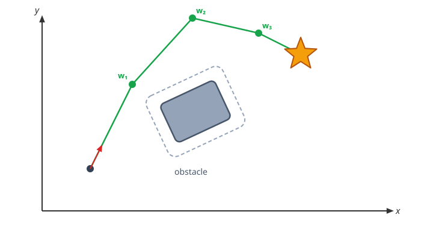
This growing trick works because we're treating the robot as a circle: since it looks the same from every angle, inflating the obstacle by its radius gives a single 2D map that's valid no matter the robot's heading.
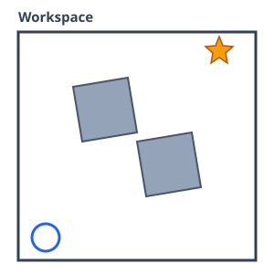
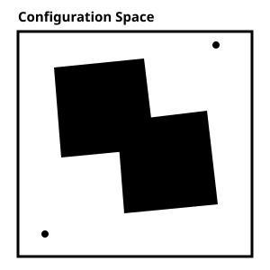
A non-circular mobile robot wouldn't get away with just one 2D map like this — it would need a different one for every possible heading.
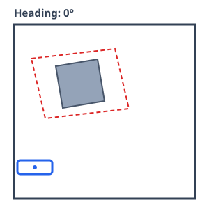
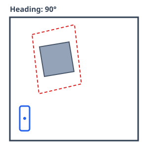
A robot's configuration space (or C-space) is the minimal set of numbers that fully describes its pose — for a mobile robot, that's its position and heading \((x, y, \theta)\); for an arm, it's the joint angles \((q_1, \dots, q_n)\).
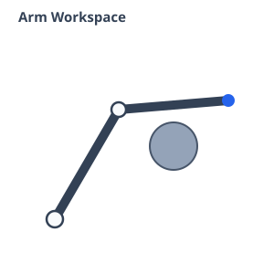
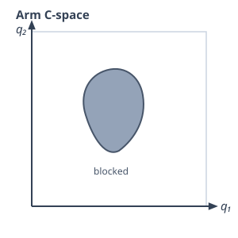
Mapping
In order to build the waypoints, we first need a map of the environment. This map can be acquired offline — built ahead of time, before the robot ever moves — or online, with the robot exploring on its own and building the map as it goes, until it has learned enough of the room to plan a path.
One common way to build a map online is to scan the environment with a lidar sensor that measures distance to nearby surfaces, marking a point everywhere a beam hits something solid and building up a point cloud of the space around it.
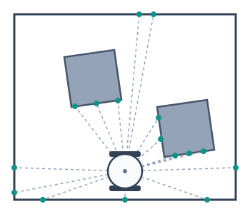
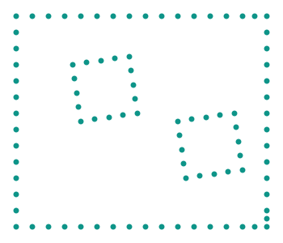
That point cloud can then be turned into an occupancy grid: divide the room into a grid of cells, and mark each one 1 if any point fell inside it, or 0 if it's still empty. The path planner can search directly over this grid instead of the raw points.
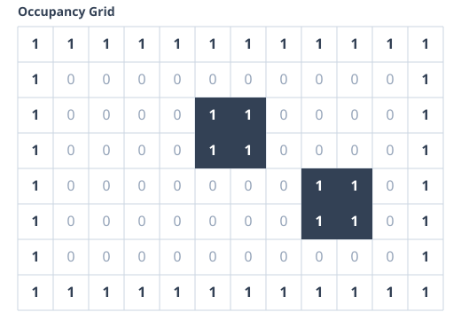
We can inflate the obstacle in the grid to account for the robot's own size using a simple image-processing technique called convolution: slide a small window — a kernel, sized to the robot's footprint — across the grid, and mark a cell occupied if any occupied cell falls inside the kernel centered on it. The obstacle grows by exactly the kernel's size.
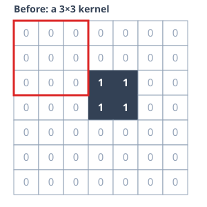
Navigation
Once we have the map, how do we get the waypoints? We can treat the grid as a graph problem: treat every free cell as a node, connect it to its free neighbors, and search that graph for the shortest path from the robot's cell to the goal's cell — with algorithms like Dijkstra or A*.
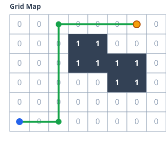
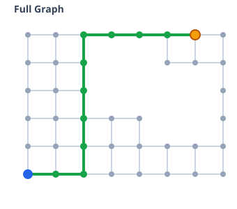
This conversion only goes one way — a grid always maps cleanly to a graph, but not every graph corresponds to a grid.
Graphs
A graph is simply nodes connected by edges. If the edges have direction, it's a directed graph.
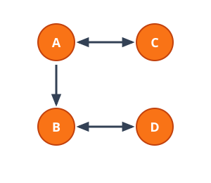
graph = {'A': ['B', 'C'],
'B': ['D'],
'C': ['A'],
'D': ['B']}
path = ['A', 'B', 'D'] # sample
Edges can also carry a weight — a cost like distance, time, energy, or number of turns. Finding the path that minimizes total cost is the shortest path problem, exactly what Dijkstra and A* solve.
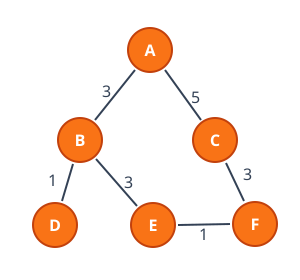
graph = {'A': {'B': 3, 'C': 5},
'B': {'A': 3, 'D': 1, 'E': 3},
'C': {'A': 5, 'F': 3},
'D': {'B': 1},
'E': {'B': 3, 'F': 1},
'F': {'C': 3, 'E': 1}}
Exploring the Graph
Having a graph isn't enough — we still have to explore it to find a path. Breadth-first search (BFS) visits every neighbor before going deeper, using a FIFO queue; depth-first search (DFS) commits to one path as deep as it can go, using a LIFO stack.
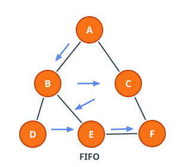
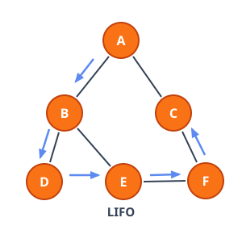
Dijkstra's Algorithm
Dijkstra's algorithm is designed to find the shortest path in a weighted graph. It is essentially a weighted version of Breadth-First Search (BFS): it always expands the node with the lowest cost-so-far, \(g\). If \(u\) is the node being expanded, \(v\) one of its neighbors, and \(w(u, v)\) the weight of the edge between them, then \(v\)'s cost is updated by relaxation:
A* Search
A* is simply an extension of Dijkstra's algorithm. The critical difference is that A* is informed, whereas Dijkstra's is blind — it ranks nodes by \(f = g + h\), where \(g\) is the cost so far and \(h\) is a heuristic estimate of the remaining distance to the goal.
Manhattan distance and Euclidean distance are both common, good heuristics.
Examples in Practice
Grids to Graphs
In order to go from a grid to a graph, every free cell becomes a node, connected to whichever of its neighbors are also free. Instead of labeling nodes 'A', 'B', 'C', ..., a grid's nodes can just be their (row, col) tuples, and rather than typing the graph out by hand like the small examples earlier, it can be generated directly from the grid itself:
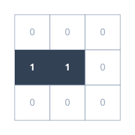
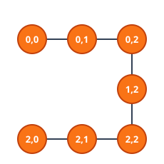
grid = [[0, 0, 0],
[1, 1, 0],
[0, 0, 0]]
def get_neighbors(u: tuple, grid: list):
neighbors = []
for delta in ((0, 1), (0, -1), (1, 0), (-1, 0)):
cand = (u[0] + delta[0], u[1] + delta[1])
if cand[0] < 0 or cand[1] < 0:
continue
if cand[0] >= len(grid) or cand[1] >= len(grid[0]):
continue
if grid[cand[0]][cand[1]] == 0:
neighbors.append(cand)
return neighbors
def build_graph(grid: list):
graph = {}
for row in range(len(grid)):
for col in range(len(grid[0])):
if grid[row][col] == 0:
current_node = (row, col)
graph[current_node] = get_neighbors(current_node, grid)
return graph
Finding the Shortest Path
The graph below can be handed to any of the four search algorithms in this chapter to find the shortest path from start to goal.
BFS pulls from a FIFO queue: queue.pop(0) always removes the oldest entry from the front, so every neighbor gets visited before the search goes deeper:
graph = {'A' : ['B', 'C'],
'B' : ['A', 'D', 'E'],
'C' : ['A', 'F'],
'D' : ['B'],
'E' : ['B', 'F'],
'F' : ['C', 'E']
}
start = 'A'
goal = 'F'
# EXPLORE
queue = [start]
visited = set(start)
parent = {}
while queue:
v = queue.pop(0) # FIFO: remove from the front
for u in graph[v]:
if u not in visited:
queue.append(u)
visited.add(u)
parent[u] = v
# SHORTEST PATH
key = goal
path = []
while key in parent.keys():
key = parent[key]
path.insert(0, key) # Add to the front of the list
path.append(goal)
print(path)
DFS is nearly identical — swap the queue for a LIFO stack: stack.pop() removes the most recent entry from the back, letting the search commit to one path as deep as it can go before backtracking.
Both BFS and DFS treat every edge as equally costly, so neither can tell a short expensive detour from a long cheap route — once edges carry different weights, we need an algorithm that actually accounts for cost. The same blind spot shows up with diagonal movement: a diagonal step covers more physical distance than an orthogonal one, but BFS and DFS would count both as a single hop, often returning a path that isn't actually the shortest. Dijkstra's swaps the stack for a priority queue ordered by cost, so it always expands the cheapest node next instead of the most recently discovered one.
from heapq import heapify, heappush, heappop
from collections import defaultdict
graph = {'A' : [(3,'B'),(5,'C')],
'B' : [(3,'A'),(1,'D'),(3,'E')],
'C' : [(5,'A'),(3,'F')],
'D' : [(1,'B')],
'E' : [(3,'B'),(1,'F')],
'F' : [(3,'C'),(1,'E')]
}
start = 'A'
goal = 'F'
queue = [(0,start)]
heapify(queue)
distances = defaultdict(lambda:float("inf"))
distances[start] = 0
visited = {start}
parent = {}
# EXPLORE
while queue:
(currentdist, v) = heappop(queue) # remove lowest cost node
visited.add(v)
for (costvu, u) in graph[v]:
if u not in visited:
newcost = distances[v] + costvu
if newcost < distances[u]:
distances[u] = newcost # update cost
heappush(queue, (newcost, u))
parent[u] = v
# SHORTEST PATH
key = goal
path = []
while key in parent.keys():
key = parent[key]
path.insert(0, key) # add to the front of the list
path.append(goal)
print(path)
Dijkstra finds that A → B → E → F is the cheapest route to F, at a total cost of 7 — beating the more direct-looking A → C → F, which costs 8.
A* reuses Dijkstra's script almost line for line — the only changes are a coords lookup and manhattan heuristic, and adding that heuristic to what gets pushed onto the heap:
from heapq import heapify, heappush, heappop
from collections import defaultdict
graph = {'A' : [(3,'B'),(5,'C')],
'B' : [(3,'A'),(1,'D'),(3,'E')],
'C' : [(5,'A'),(3,'F')],
'D' : [(1,'B')],
'E' : [(3,'B'),(1,'F')],
'F' : [(3,'C'),(1,'E')]
}
coords = {'A': (2,3), 'B': (1,2), 'C': (3,2), 'D': (0,1), 'E': (2,1), 'F': (4,1)}
def manhattan(a, b):
return abs(coords[a][0] - coords[b][0]) + abs(coords[a][1] - coords[b][1])
start = 'A'
goal = 'F'
queue = [(manhattan(start, goal), start)] # seeded with the heuristic
heapify(queue)
distances = defaultdict(lambda:float("inf"))
distances[start] = 0
visited = {start}
parent = {}
# EXPLORE
while queue:
(currentcost, v) = heappop(queue) # remove lowest cost node
visited.add(v)
for (costvu, u) in graph[v]:
if u not in visited:
newcost = distances[v] + costvu
if newcost < distances[u]:
distances[u] = newcost # update cost
heappush(queue, (newcost + manhattan(u, goal), u)) # heuristic added
parent[u] = v
# SHORTEST PATH
key = goal
path = []
while key in parent.keys():
key = parent[key]
path.insert(0, key) # add to the front of the list
path.append(goal)
print(path)
All four algorithms walk the exact same graph — the only thing that changes is which node gets popped next, and that single choice is what separates blindly flooding outward from searching with a sense of direction.